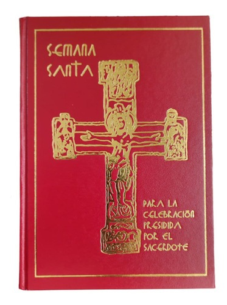
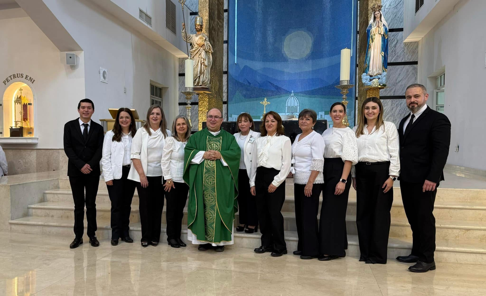
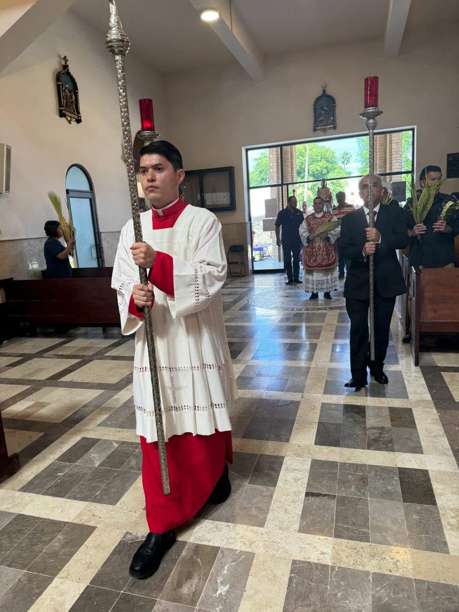
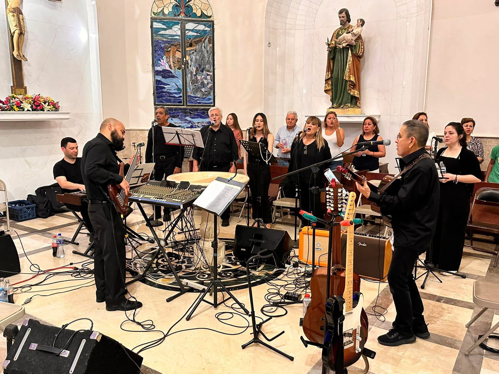
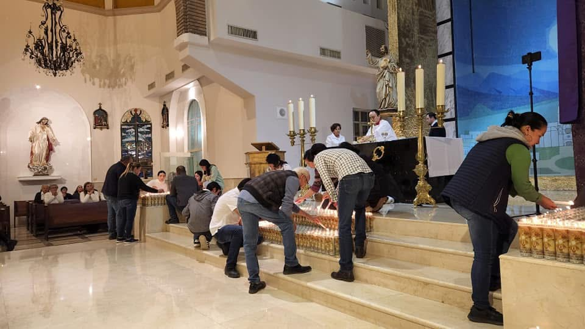

De la Pasión del Señor
Parroquia San Pedro (Allende)
Sábado (Víspera): 7:00 PM
Domingo: 8:00 AM, 10:00 AM, 12:00 PM, 7:00 PM
Incluye bendición y procesión exterior.
Capilla San Judas Tadeo
Domingo: 11:00 AM
Incluye bendición y procesión exterior.
Selecciona tu área para ver tareas detalladas y registro.

Textos íntegros de las lecturas, oraciones y la Pasión para la celebración (Ciclo A).

Asistencia en la distribución de la Sagrada Comunión.

Servicio al altar, manejo del incensario y cruz alta.
Proclamación de la Palabra de Dios con claridad.

Soporte musical de la asamblea.
Acogida amable de los fieles y mantenimiento del orden.

Preparación de vasos sagrados, lienzos, vestimentas e insumos (hostias, vino, incienso, cirios).